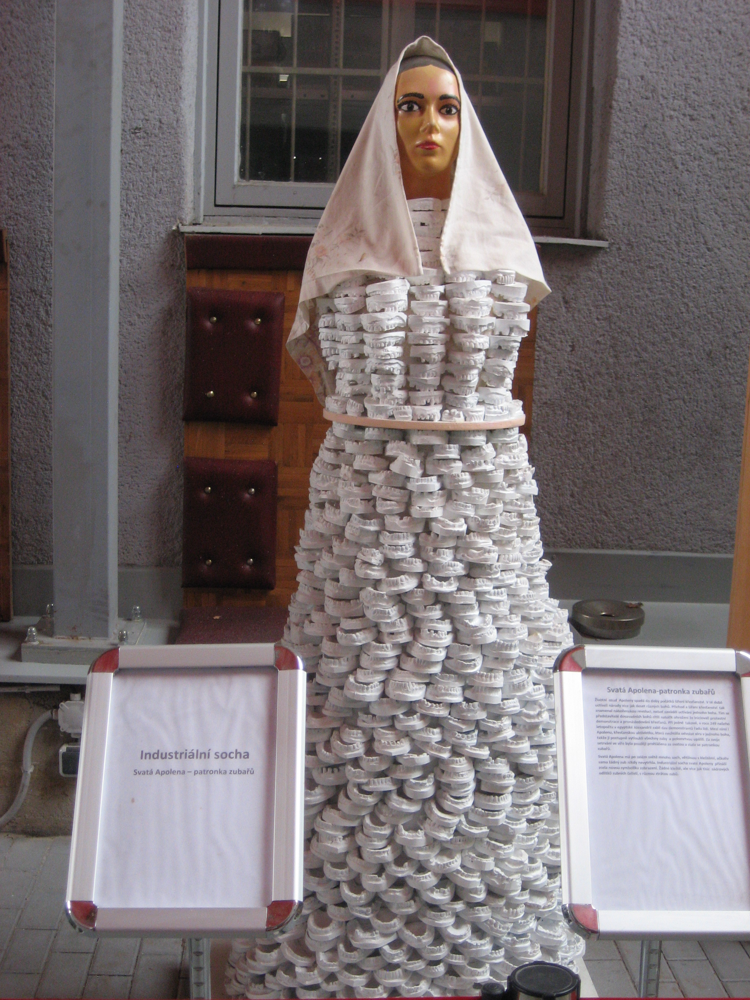
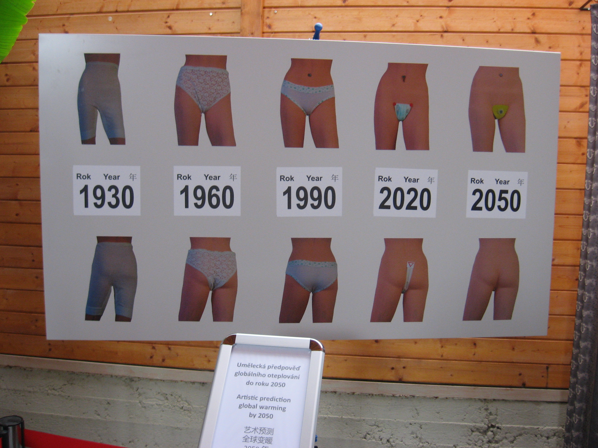
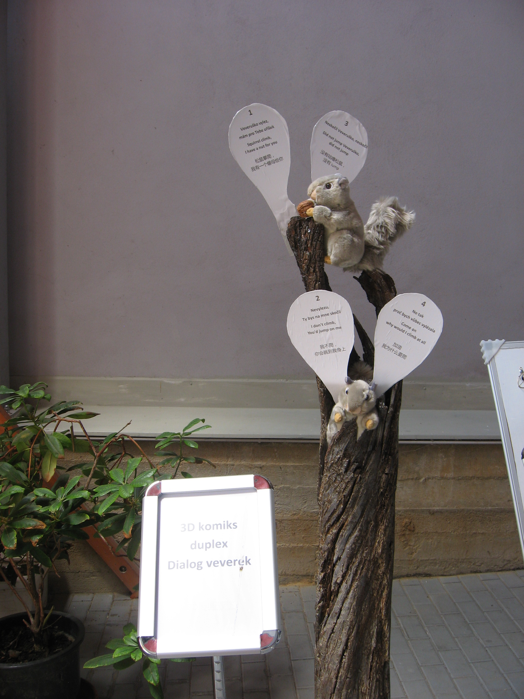

Muzeum industriálního umění si klade za cíl vytvářet a shromažďovat
umělecká díla zachycující vývoj lidské společnosti počínaje designem až po
nový umělecký směr 3D komiks.
V muzeu se tak nachází nejstarší exponát z kategorie designu, z roku 1820,
pomůcky pro léčení vaginismu, stejně tak jako exponáty ze současnosti.
Vůbec nejstarším exponátem je torzo přírodního samorostu, hraničního
stromu, z roku 1653, vysokého cca 2,5m, pocházejícího z „Vlčiny“.
Nejrozměrnější jsou sochy v životní velikosti, jako například sousoší „Světová
finanční krize 2008“, „Vojáci OSN při bojovém nasazení“, „Ohrožení
světového míru“. Naopak nejmenší jsou umělecké artefakty – těžítka na stůl,
jako například „Milenium 2000“, „Václav Havel“, „Karl Marx“ a další.
Samostatnou skupinu tvoří rozměrné dvojportréty, jako jsou „Busch –
Gorbačov, nebo „Klaus – Mečiar“.
Z knižní tvorby jsou to dvojjazyčné, česko - anglické umělecky provedené
knihy Nezval – EDISON, Osers – PRAHA a další.
Svatá Apolena-patronka zubařů
Životní osud Apoleny spadá do
doby počátků
šíření křesťanství. V té době
uctívali národy více jak deset různých bohů. Příchod a šíření křesťanství tak
znamenal náboženskou revoluci, neboť zaváděl uctívání jednoho boha. Tím se
představitelé dosavadních bohů cítili natolik ohroženi že iniciovali protestní
demonstrace a pronásledování křesťanů. Při jedné takové, v roce 249 našeho
letopočtu v egyptské Alexandrii zabil dav demonstrantů řadu lidí. Mezi nimi i
Apolenu, křesťanskou aktivistku, která nechtěla odvolat víru v jednoho boha,
takže ji postupně vytloukli všechny zuby a polomrtvou upálili. Za svoje
setrvání ve víře byla později prohlášena za svatou a stala se patronkou
zubařů.
Svatá Apolena má po celém světě mnoho soch, většinou s kleštěmi, ačkoliv
sama žádný zub nikdy nevytrhla. Industriální socha svaté Apoleny přináší
zcela novou symboliku zobrazení. Žádné kleště, ale více jak tisíc sádrových
odlitků zubních čelistí, s různou ztrátou zubů.
Umělecká předpověď globálního oteplování do roku 2050
3D komiks duplex Dialog veverek
Hodějovucká 2254
Pelhřimov
393 01
Husinecká 903/10
130 00 Praha 3
Czech Republic – Europe